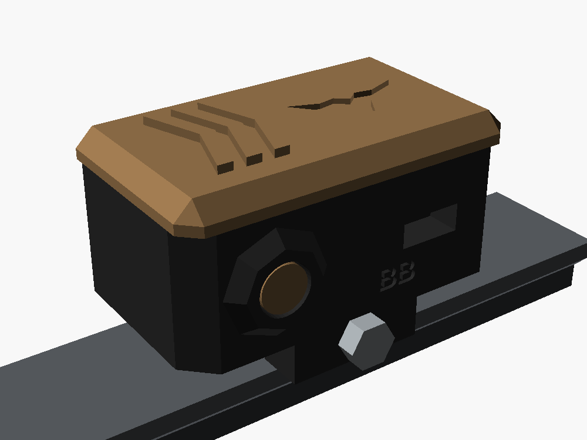
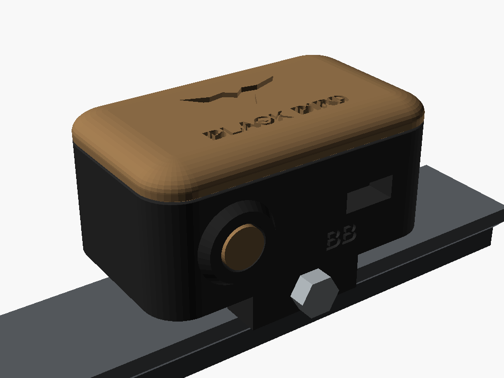
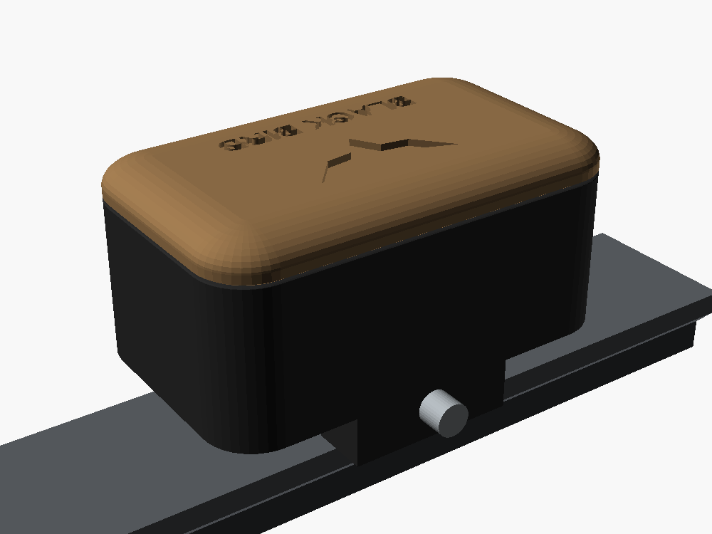
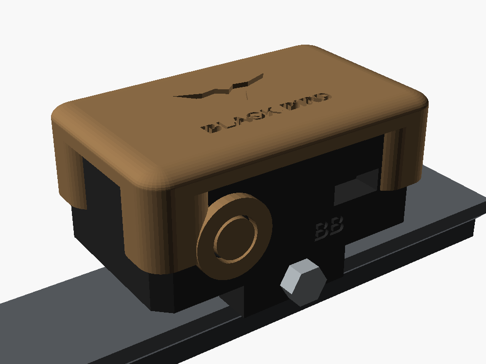
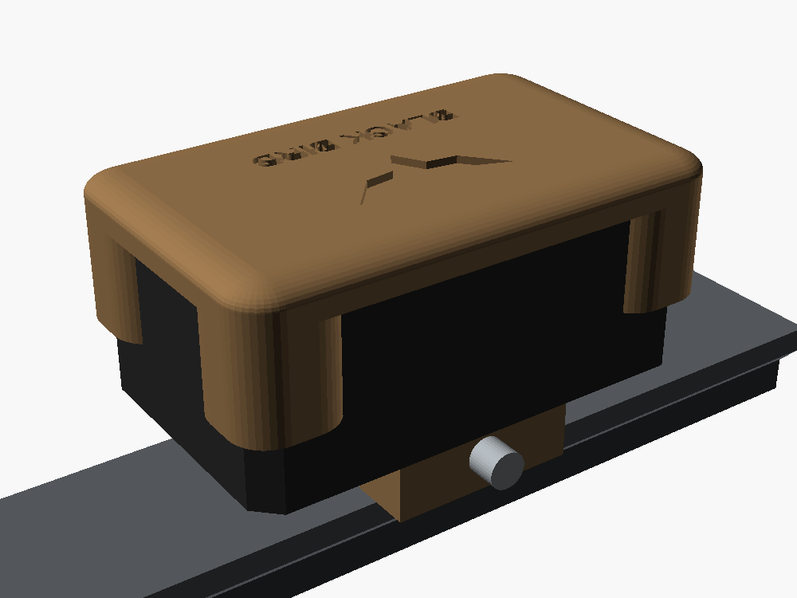

O mesmo nível anti-cant em três estilos, montado no trilho Picatinny. A caixa por dentro é igual nos três, com paredes de 3 mm: o visual novo vem de material acrescentado por fora, então a resistência a BB continua a mesma ou melhora. As imagens são de prévia, e as letras gravadas saem bem mais nítidas na peça impressa.
Preto corpo e garra fixa
Coyote tampa, mandíbula, botões e detalhes
Cada peça sai de uma cor só, então não precisa trocar filamento no meio da impressão: imprime o corpo em PETG preto e a tampa em PETG coyote (marrom-areia).
ATático facetado MINHA RECOMENDAÇÃO
Cantos chanfrados a 45°, tampa coyote facetada com nervuras em V, moldura de 8 lados protegendo o botão ZERAR e painel hexagonal em relevo na lateral direita.

Lado esquerdo: botão ZERAR na moldura, chave liga/desligaLado direito: painel hexagonal e mandíbula coyote embaixo
Faces inclinadas fazem a BB ricochetear em vez de bater de frente
A moldura evita apertar o ZERAR sem querer e protege o botão
Combina com equipamento militar; chanfro de 45° imprime limpo, sem suporte
O painel hexagonal junta um pouco de poeira e barro (sai com escova)
BArredondado liso
Cantos com raio de 6 mm, tampa coyote boleada com o emblema e o nome gravados, e anel liso em volta do botão.

Lado esquerdo

Lado direito: liso
Visual limpo, de eletrônico comercial; fácil de limpar
Sem quina para enganchar na bandoleira ou na roupa
A borda boleada da tampa imprime com "degraus" de camada visíveis
Destoa um pouco do resto do equipamento tático
CRugged (misto)
Corpo preto chanfrado e tampa coyote arredondada, com cantoneiras que descem e abraçam os 4 cantos da caixa, como capa de celular reforçada.

Lado esquerdo: cantoneiras coyote e anel no botão

Lado direito
As cantoneiras levam as pancadas (quina é onde a caixa costuma rachar)
Visual "à prova de tudo", com bastante coyote aparecendo
Tampa maior e um pouco mais pesada (+ ~6 g)
As cantoneiras cobrem parte das laterais; nos outros projetos é preciso desviar de telas e conectores
Comparação rápida
A · Tático facetado
B · Arredondado
C · Rugged
Proteção contra BB
★★★ desvia o tiro
★★ igual à atual
★★★ protege as quinas
Impressão
Fácil, sem suporte
Fácil; borda com degraus
Fácil, sem suporte
Combina com airsoft
Muito
Pouco
Muito
Serve para todos os projetos
Sim
Sim
Quase (atenção a telas e portas nas laterais)
Escolhido: A · Tático facetado. Já aplicado nas peças de verdade da bomba (01), do anti-cant (03), do cronógrafo (04) e do telêmetro (12), para o conjunto da luneta combinar.
Como foi feito: o estilo A virou um conjunto de peças-padrão na biblioteca comum (caixa chanfrada, tampa facetada, moldura de botão, painel hexagonal, nervuras em V e o emblema). Assim todos os projetos ficam com a mesma cara, e as medidas internas, furos e encaixes continuam os mesmos de antes.